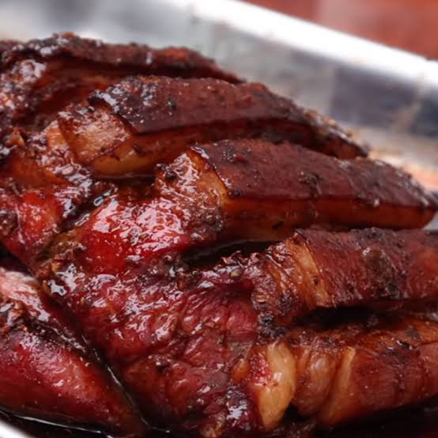

Regresa al recetario
Chanchito al horno
Receta para 7 personas
Un plato que quizás haga para Navidad o Año Nuevo para toda la familia. Por lo menos a mí, me gusta el chancho en todas sus preparaciones.
ingredientes
- Brazuelo o pierna de cerdo
- Pimienta negra al gusto
- 2 Cucharadas de comino
- 1 Cucharadita de oregano
- 1/2 Cucharadita de canela china
- 4 Cucharadas de Pasta de ají panca
- 5 Cucharaditas de Salsa de Soya Clara
- 1/2 taza de chicha de jora o vino
- Sal al gusto
- 2 Cucharadas de ajo molido o picado
Preparación
- En un recipiente, agregar 2 cucharadas de pimienta molida, 1 cucharada de comino en polvo, 4 cucharadas de pasta de ají panca, 2 cucharadas de pasta de ají mirasol, 1/2 cucharadita de canela china, 1 cucharada de orégano seco, 8 cucharadas de salsa de soya, 1/2 de taza de cerveza negra, 1/2 taza de chicha de jora y 2 cucharadas de ajo licuado. Integrar y reservar.
- Colocar la pierna o brazuelo de cerdo en una asadera, cortar la carne para facilitar el marinado
- Bañar con aderezo, refrigerar por una noche.
- Al día siguiente, dar vuelta, cortar la piel en cubos como se aprecia en el video, llevar al horno a 200 ºC por 2 horas.
- Retirar del horno y dejar reposar por 15 minutos antes de servir.
